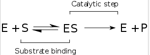

Kinetics
Course Index Enzyme kinetics is the investigation of how enzymes bind substrates and turn them into products. The rate data used in kinetic analyses are commonly obtained from enzyme assays, the dynamics of many enzymes are studied on the level of individual molecules.
Enzymes reaction are considered in two stages:
In the first, the substrate binds reversibly to the enzyme, forming the enzyme-substrate complex. This is sometimes called the Michaelis complex. The enzyme then catalyzes the chemical step in the reaction and releases the product. Note that the simple Michaelis Menten mechanism for the enzymatic activity is considered today a basic idea, where many examples show that the enzymatic activity involves structural dynamics. This is incorporated in the enzymatic mechanism while introducing several Michaelis Menten pathways that are connected with fluctuating rates.
Enzyme rates depend on solution conditions and substrate concentration. Conditions that denature the protein abolish enzyme activity, such as high temperatures, extremes of pH or high salt concentrations, while raising substrate concentration tends to increase activity when [S] is low. To find the maximum speed of an enzymatic reaction, the substrate concentration is increased until a constant rate of product formation is seen. This is shown in the saturation curve on the right. Saturation happens because, as substrate concentration increases, more and more of the free enzyme is converted into the substrate-bound ES form. At the maximum reaction rate (Vmax) of the enzyme, all the enzyme active sites are bound to substrate, and the amount of ES complex is the same as the total amount of enzyme. However, Vmax is only one kinetic constant of enzymes. The amount of substrate needed to achieve a given rate of reaction is also important. This is given by the Michaelis-Menten constant (Km), which is the substrate concentration required for an enzyme to reach one-half its maximum reaction rate; generally, each enzyme has a characteristic Km for a given substrate. Another useful constant is kcat, which is the rate of product formation handled by one active site and is generally given in units of inverse seconds.

The efficiency of an enzyme can be expressed in terms of kcat/Km. This is also called the specificity constant and incorporates the rate constants for all steps in the reaction up to and including the first irreversible step. Because the specificity constant reflects both affinity and catalytic ability, it is useful for comparing different enzymes against each other, or the same enzyme with different substrates.